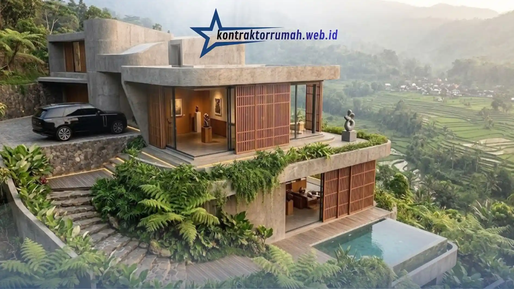

Ada momen tertentu ketika sebuah rumah berhenti menjadi sekadar bangunan dan mulai menjadi karakter. Momen itu biasanya lahir dari fasad — wajah pertama yang disapa mata sebelum siapa pun melangkah masuk. Dan di antara sekian banyak tren, perpaduan kayu dan besi pada desain rumah minimalis hari ini bukan lagi sekadar gaya sesaat, melainkan bahasa arsitektur yang matang: hangat namun tegas, alami namun presisi.
Sebagai Senior Architect sekaligus Urban Planner dan Interior Designer di Kontraktor Rumah, saya melihat langsung bagaimana klien di Jabodetabek semakin jatuh cinta pada fasad yang "bercerita", bukan yang seragam. Artikel ini akan membawa Anda menyelami kenapa kombinasi kayu-besi begitu relevan untuk iklim tropis, bagaimana memilih material yang tepat, hingga tiga konsep layout yang bisa langsung menginspirasi rumah impian Anda.
Poin Penting
- Kombinasi kayu & besi menjadi tren fasad rumah minimalis modern tropis yang hangat sekaligus tegas.
- WPC (Wood Plastic Composite) lebih tahan air, jamur, dan UV dibanding kayu asli untuk fasad eksterior.
- Finishing powder coating wajib pada elemen besi agar bebas karat di iklim tropis lembap.
- Tersedia 3 konsep layout: grid kisi-kisi vertikal, industrial-earthy kamprot, dan monokrom aksen kantilever.
- Gambar kerja 3D gratis tersedia apabila lanjut ke tahap konstruksi bersama tim Kontraktor Rumah.
Tren Fasad Kombinasi Kayu dan Besi pada Desain Rumah Minimalis
Ringkasan singkat: Kombinasi besi dan kayu menjadi pilihan terbaik untuk desain rumah minimalis modern tropis karena keduanya saling melengkapi secara estetika maupun fungsi — besi memberi ketegasan garis, kekuatan struktural, dan kesan industrial-modern, sementara kayu menghadirkan kehangatan visual serta nuansa alami yang menyatu dengan iklim tropis. Perpaduan ini memungkinkan rumah tetap estetis tanpa mengorbankan ketahanan bangunan, sirkulasi udara, maupun efisiensi perawatan jangka panjang.
Jika lima tahun lalu fasad minimalis identik dengan dinding putih polos dan garis-garis kaku, arah desain kini bergeser ke sesuatu yang lebih personal. Arsitektur tropis kontemporer menuntut material yang mampu "bernapas" bersama iklim — menyerap panas tanpa membuat interior gerah, sekaligus tahan terhadap kelembapan musim hujan.
Besi, terutama dalam bentuk kisi-kisi (louvre) atau railing minimalis, memberikan fungsi ganda: elemen dekoratif sekaligus filter cahaya dan udara. Kayu, di sisi lain, menjadi kontrapoin visual yang menenangkan mata dari kesan dingin logam. Ketika keduanya dipadukan dengan proporsi yang tepat, hasilnya adalah fasad yang terasa kontemporer tanpa kehilangan kehangatan rumah tropis. Inilah alasan kombinasi ini menjadi salah satu pilar utama tren desain rumah minimalis tahun ini.
Kelebihan Fasad Kayu & Besi untuk Rumah Tropis Modern
Memilih material fasad bukan cuma soal tampilan, tapi juga soal investasi jangka panjang. Berikut perbandingan yang perlu dipahami sebelum menentukan pilihan:
Kayu Asli vs WPC (Wood Plastic Composite)
Kayu asli seperti ulin, merbau, atau bengkirai menawarkan tekstur dan serat alami yang sulit ditiru material apa pun. Namun, di iklim tropis dengan curah hujan tinggi, kayu asli membutuhkan perawatan berkala (coating ulang, anti rayap) agar tidak lapuk atau memuai akibat kelembapan.
Di sinilah WPC menjadi solusi cerdas. Material komposit ini menggabungkan serat kayu dan plastik polimer, menghasilkan tampilan menyerupai kayu asli namun jauh lebih tahan terhadap air, jamur, dan sinar UV. WPC tidak memerlukan pengecatan ulang, tidak memuai-menyusut signifikan, dan usia pakainya jauh lebih panjang tanpa perawatan intensif — pilihan ideal untuk fasad eksterior yang terekspos cuaca sepanjang tahun.
Finishing Besi Anti-Karat (Powder Coating)
Untuk elemen besi, karat adalah musuh utama di negara tropis lembap. Finishing powder coating menjadi standar wajib: lapisan bubuk yang dipanaskan dan menyatu ke permukaan logam ini menciptakan pelindung yang jauh lebih tebal dan tahan lama dibanding cat konvensional. Hasilnya, warna tetap solid, permukaan tahan gores, dan risiko korosi ditekan signifikan bahkan setelah bertahun-tahun terpapar hujan dan panas.
Kombinasi kayu (atau WPC) dengan besi finishing powder coating inilah yang menjadikan fasad tropis modern bukan hanya indah di hari peresmian, tapi tetap gagah bertahun-tahun kemudian.
3 Inspirasi Layout Fasad Minimalis Kreatif
Berikut tiga konsep yang paling sering kami rancang dan wujudkan untuk klien yang menginginkan desain rumah minimalis dengan karakter kuat namun tetap fungsional.
1. Konsep Grid Kisi-Kisi Besi & Kayu Vertikal (Privasi Maksimal)
Konsep ini mengandalkan susunan kisi-kisi vertikal berselang-seling antara panel besi hollow dan potongan kayu/WPC. Fungsinya jauh melampaui estetika: grid vertikal ini menciptakan efek "saring pandang" — orang dari luar tidak bisa melihat langsung ke dalam rumah, namun penghuni tetap mendapat pencahayaan alami dan sirkulasi udara yang optimal.
Cocok untuk rumah di lahan sempit dengan jarak pandang dekat ke tetangga, atau untuk area yang membutuhkan privasi ekstra seperti kamar tidur utama dan ruang keluarga di lantai bawah. Bayangkan cahaya sore menembus celah-celah kisi, membentuk garis-garis bayangan dinamis di lantai — detail kecil yang mengubah rumah menjadi pengalaman visual sepanjang hari.
2. Konsep Industrial-Earthy dengan Dinding Kamprot & Kayu Hangat
Bagi yang menyukai tekstur kasar namun tetap hangat, perpaduan dinding kamprot (exposed plaster bertekstur) dengan aksen kayu solid menciptakan nuansa "industrial-earthy" yang belakangan digandrungi banyak klien muda. Kamprot memberikan dimensi dan bayangan alami pada permukaan dinding, sementara panel kayu di area pintu masuk atau carport menjadi penyeimbang yang lembut.
Elemen besi biasanya hadir dalam bentuk railing tangga eksterior atau kanopi tipis di atas pintu utama — detail minor namun cukup untuk mengikat keseluruhan komposisi menjadi satu kesatuan yang kohesif. Palet warna netral (abu tua, krem, cokelat kayu) membuat tampilan ini timeless, tidak mudah terasa ketinggalan zaman.

Konsep fasad kayu dan besi juga banyak diterapkan pada hunian modern di lahan berkontur dengan pemandangan alam terbuka.
3. Konsep Minimalis Monokrom dengan Aksen Kayu Fasad Kantilever
Ini adalah konsep untuk rumah yang ingin tampil berani namun tetap bersih secara visual. Bidang dinding monokrom (hitam, abu gelap, atau putih tulang) menjadi kanvas utama, sementara satu elemen kayu besar — biasanya berupa balok kantilever yang menjorok ke depan — menjadi focal point tunggal yang langsung menarik perhatian.
Struktur kantilever ini membutuhkan perhitungan struktural yang presisi karena beban menggantung tanpa penyangga langsung di bawahnya — bagian inilah yang membuat peran arsitek dan kontraktor berpengalaman menjadi krusial. Efek "melayang" pada kayu kantilever menciptakan kesan modern-futuristik, sekaligus memberi ruang teduh alami di teras bawahnya tanpa perlu kanopi tambahan.
Konsultasikan Gambar Arsitektur & Desain Fasad Impian Anda
Melihat inspirasi memang menyenangkan, tapi mewujudkannya membutuhkan lebih dari sekadar referensi Pinterest. Setiap lahan punya orientasi matahari, arah angin, dan karakter lingkungan yang berbeda — itulah mengapa desain fasad yang benar-benar berhasil selalu lahir dari proses konsultasi yang matang antara pemilik rumah dan arsitek.
Kontraktor Rumah hadir sebagai penyedia jasa rancang bangun terintegrasi mulai dari tahap Desain Arsitek hingga Pengerjaan Konstruksi Fisik, sehingga Anda tidak perlu repot mengoordinasikan arsitek dan kontraktor secara terpisah. Satu tim, satu visi, satu tanggung jawab dari gambar hingga serah terima kunci.
Sebagai bentuk komitmen kami terhadap klien, kami menyediakan layanan Desain Arsitek Gambar Kerja 3D secara gratis apabila Anda melanjutkan proses pembangunan konstruksi fisik bersama tim kami. Artinya, Anda bisa melihat visualisasi rumah impian secara detail dan realistis sebelum satu bata pun diletakkan, tanpa biaya desain terpisah. Untuk konsultasi gratis seputar desain fasad kayu-besi, layout rumah minimalis, hingga estimasi biaya konstruksi, hubungi tim kami melalui WhatsApp di 088989643555.
FAQ Seputar Desain Fasad Rumah Minimalis Kayu & Besi
Fasad bukan sekadar dinding terluar — ia adalah jabat tangan pertama rumah Anda kepada dunia. Dengan memadukan kehangatan kayu dan ketegasan besi, sebuah rumah bisa tampil personal, modern, sekaligus tetap bersahabat dengan iklim tropis Indonesia. Jika Anda sedang merancang atau merenovasi hunian dan ingin mewujudkan desain rumah minimalis yang benar-benar sesuai karakter dan kebutuhan keluarga, tim Kontraktor Rumah siap mendampingi dari gambar kerja 3D hingga rumah berdiri kokoh di depan mata.